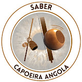
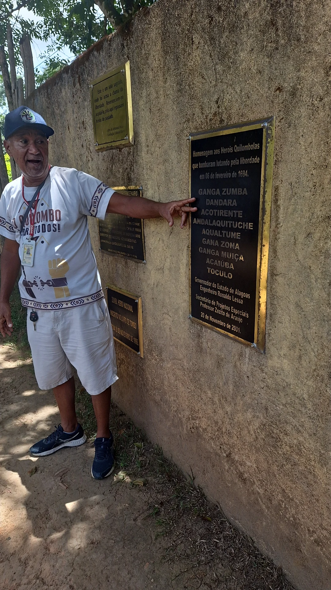
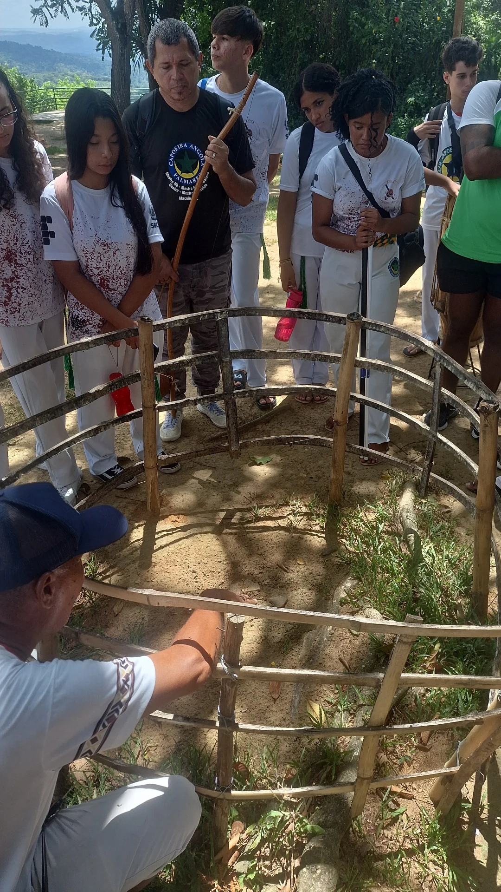

Preservação da Memória e Salvaguarda da CapoeiraUm acervo vivo dos saberes, oficinas, eventos culturais e demais registros da Capoeira no estado de Alagoas, destinado ao projeto de Salvaguarda do IPHAN em parceria com o projeto de pesquisa Saber Capoeira Angola.
Explorar AcervoResumo do andamento, trechos de entrevistas e links do acervo.
Resultados preliminares compartilhados com a comunidade.
Resumo do andamento, trechos de entrevistas e links do acervo.
Resultados preliminares compartilhados com a comunidade.
Resumo do andamento, trechos de entrevistas e links do acervo.
Resultados preliminares compartilhados com a comunidade.


Resultados preliminares compartilhados com a comunidade.
Este site organiza o fluxo de trabalho proposto...